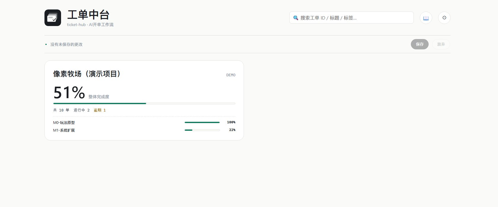
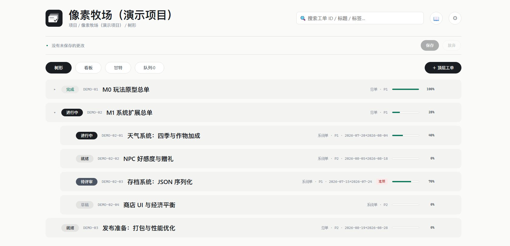
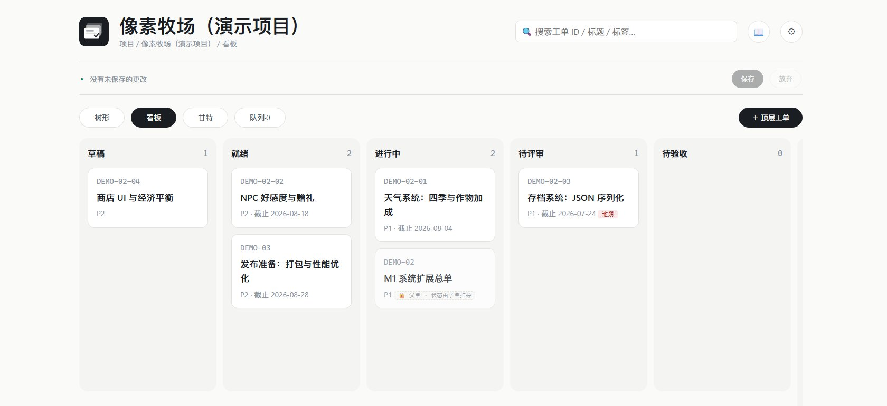

我平时和 AI 结对开发个人项目：我出需求和验收，Claude 负责规划评审，Codex 负责实现。项目一多问题就来了——任务口头化、进度黑箱、做完的和没做的混在一起。这和团队协作里"信息不对齐"是同一个病。
ticket-hub 是我给这套协作立的规矩：tickets/ 目录下的 Markdown 工单是唯一事实源，人、Claude、Codex 三方都围绕工单工作。改文件和在界面上操作完全等效，git 就是它的历史记录。

我平时和 AI 结对开发个人项目：我出需求和验收，Claude 负责规划评审，Codex 负责实现。项目一多问题就来了——任务口头化、进度黑箱、做完的和没做的混在一起。这和团队协作里"信息不对齐"是同一个病。
ticket-hub 是我给这套协作立的规矩：tickets/ 目录下的 Markdown 工单是唯一事实源，人、Claude、Codex 三方都围绕工单工作。改文件和在界面上操作完全等效，git 就是它的历史记录。
每张工单沿着状态机流转：草稿 → 就绪 → 进行中 → 待评审 → 待验收 → 完成。工单支持最多 4 层父子分解，父单进度由子单自动上卷；界面上的一切改动先暂存、点保存才落盘，每次保存在 journal/ 记一条流水，可整体放弃回滚。
最关键的一环是派发与回流：叶子工单满足"就绪且依赖全完成"才允许派发，派发时工单带快照写进目标项目的信箱文件，AI 监听器自动开工；完工报告出现后自动归档、工单自动置为"待评审"。任务从分配到验收，全程不需要口头同步。
树形看结构与进度，看板按状态拖卡片，甘特图拖条挪期、拖两端改起止、依赖箭头、逾期标红。视图只是投影，数据永远是那批 md 文件。页面截图与在线演示使用虚构示例项目《像素牧场》的数据。


带 24 项单元测试，可跑浏览器版、Electron 桌面版，也能打包成免安装 exe——exe 只是壳不含数据，放进任何仓库双击即用。源码已开源；它的协作理念由后继项目「监制台」（AI agent 生产流水线）继续演进，两者组成我自己的一套研发工具链。
这个项目让我把"目录即状态机、文档即事实源"这些想法真正跑通了：项目管理的本质不是盯人，是把状态变化设计成不需要盯的结构。